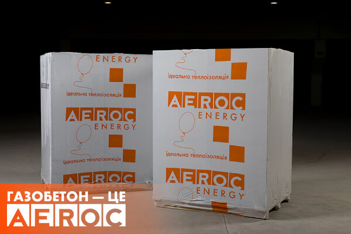

Застосування панелей: Тепло- і звукоізоляція зовнішніх і
внутрішніх стін будівель з газобетону чи інших будматеріалів.
Теплоізоляція несучих конструкцій і фасадів.
Реконструкція різного роду об'єктів, в тому числі й історичних.
Утеплення промислових об'єктів, які планують переводити ...
Теплоізоляційні панелі з газобетону
Теплоізоляційні панелі AEROC ENERGY — це сучасний утеплювач, виготовлений з
газобетону щільністю 150 кг/м³. Саме завдяки низькій щільності утеплювач такого типу має
відмінні теплофізичні показники і перевершує за своїми теплоізоляційними властивостями інші
сучасні матеріали для утеплення фасадів. Слід зазначити, що теплоізоляційні панелі Аерок Енерджі
добре зарекомендували себе не тільки для утеплення зовнішніх стін, а й знайшли широке
застосування при утепленні покрівлі і підлоги. Такий тип теплоізоляції не потребує спеціального
кріплення для монтажу на фасадну стіну і монтується безпосередньо на основну стіну, шляхом
приклеювання і додатковою фіксацією дюбелями, що дозволяє уникнути виникненню містків холоду.
Переваги Aeroc Energy
Панелі Aeroc Energy мають невелику вагу, точну геометричну форму і порівняно
великий розмір, що спрощує їх монтаж без спеціалізованої підготовки. Утеплення й облицювання
будівлі такими панелями займає мало часу, адже для їх монтажу знадобиться тільки спеціальний
клей і дюбелі. Вони відмінно зберігають тепло всередині будинку і не пропускають холод ззовні.

Теплоізоляційні плити AEROC ENERGY мають безліч переваг перед існуючими на
ринку України аналогами. Вони екологічно безпечні, виготовлені з натуральних матеріалів,
абсолютно негорючі, а термін їх ефективної експлуатації досягає 100 років, чому може позаздрити
будь-який інший утеплювач.
Купити теплоізоляційні панелі
ридбати теплоізоляційні плити Аерок Енерджі для утеплення Ви можете на
нашому сайті. Для цього достатньо зателефонувати за одним із вказаних номерів телефону в розділі
“Контакти” або заповнити форму зворотного зв’язку. Якщо Ви плануєте замовити теплоізоляційні
плити безпосередньо з заводу, то варто врахувати той факт, що ми не займаємося доставкою своєї
продукції. Також при самовивозі потрібно пам’ятати, що всі розміри теплоізоляційних панелей
AEROC ENERGY виробляються на заводі в місті Березань, Київської області. Якщо у Вас немає
можливості забрати товар самостійно, то Ви можете скористатися послугами наших офіційних
партнерів у Київській області і всіх інших регіонах України. Для цього достатньо перейти в
розділ “Придбати” і обрати свій регіон проживання.
Якщо у Вас залишилися питання по теплоізоляційним панелям AEROC, ми з радістю надамо вам пораду
з цього матеріалу.